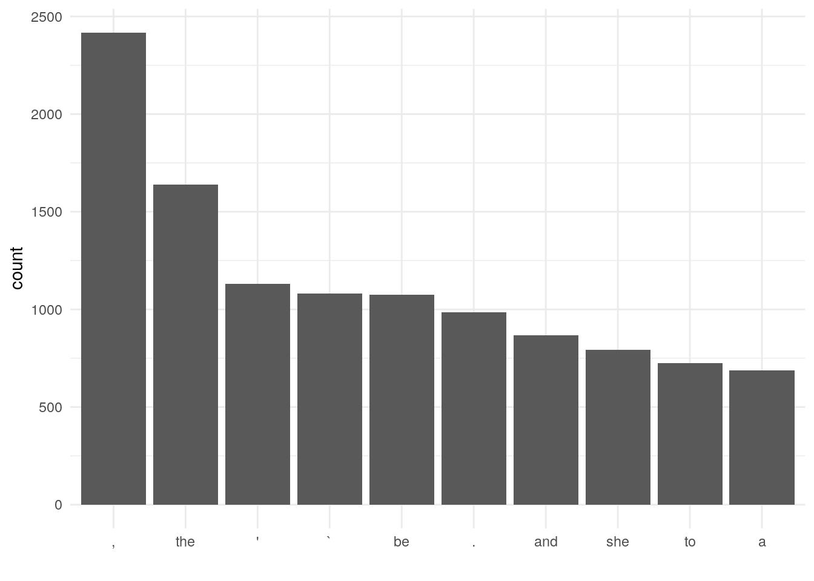
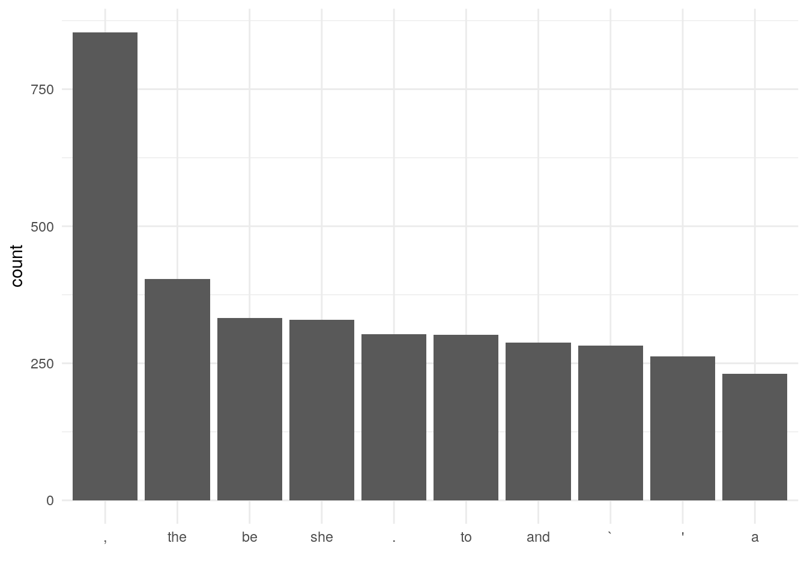
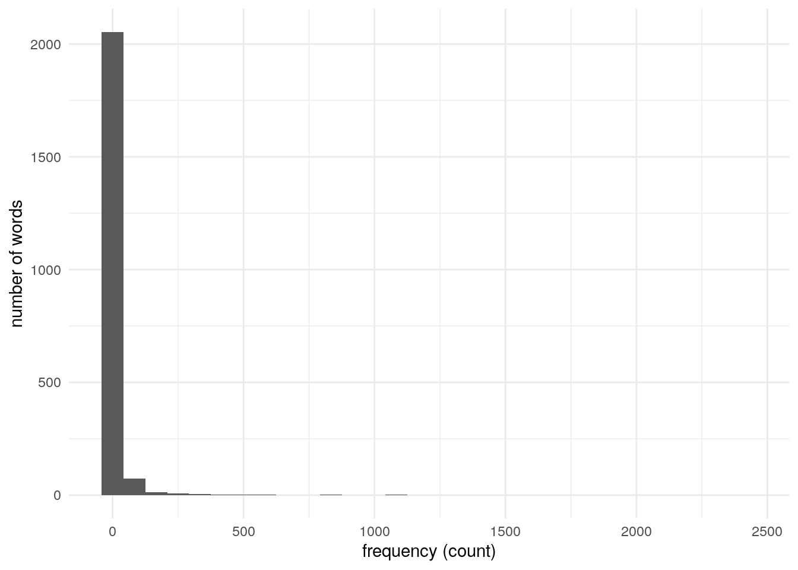

Chapter 4: POS Tagging
30. Reading the result
Implement a program that reads the result of part-of-speech tagging. Here, represent a sentence as a list of mapping objects, each of which associates a surface form, lemma (base form), part-of-speech tag with the keys text, lemma, pos. Use this representation in the rest of the problems.
lines <- readLines(here("data/alice.txt.conll"))
alice <- tibble(id_sentence = numeric(),
text = character(),
lemma = character(),
pos = character())
id_sentence <- 1
for(line in lines){
if(line == ""){
id_sentence <- id_sentence + 1
} else{
x <- str_split(line, "\t")[[1]]
alice <- alice %>%
add_row(id_sentence = id_sentence, text = x[2], lemma = x[3], pos = x[4])
}
}
alice <- alice %>%
rowid_to_column("id")
alice %>%
head()## # A tibble: 6 × 5
## id id_sentence text lemma pos
## <int> <dbl> <chr> <chr> <chr>
## 1 1 1 ALICE ALICE NNP
## 2 2 1 'S 's POS
## 3 3 1 ADVENTURES ADVENTURES NNP
## 4 4 1 IN in IN
## 5 5 1 WONDERLAND WONDERLAND NNP
## 6 6 2 Lewis Lewis NNP31. Verbs
Extract surface forms of all verbs appearing in the text.
alice %>%
filter(str_detect(pos, "VB")) %>%
pull(text) %>%
head()## [1] "was" "beginning" "get" "sitting" "having" "do"32. Base forms of verbs
Extract lemmas of all verbs appearing in the text.
alice %>%
filter(str_detect(pos, "VB")) %>%
pull(lemma) %>%
head()## [1] "be" "begin" "get" "sit" "have" "do"33. A of B
Extract noun phrases in the form of “A of B”, where A and B are nouns.
is_a_of_b <- function(i){
alice$pos[i] == "NN" & alice$text[i+1] == "of" & alice$pos[i+2] %in% "NN"
}
a_of_b <- c()
for(i in 1:(nrow(alice)-2)){
if(is_a_of_b(i)){
a_of_b <- c(a_of_b, sprintf("%s of %s", alice$text[i], alice$text[i+2]))
}
}
a_of_b## [1] "plenty of time" "saucer of milk"
## [3] "sort of way" "flavour of cherry-tart"
## [5] "number of bathing" "knowledge of history"
## [7] "subject of conversation" "question of course"
## [9] "person of authority" "sort of circle"
## [11] "deal of thought" "sort of thing"
## [13] "sort of chance" "sort of life"
## [15] "kind of thing" "bit of stick"
## [17] "yelp of delight" "game of play"
## [19] "state of mind" "tone of delight"
## [21] "length of neck" "wink of sleep"
## [23] "kind of serpent" "sort of use"
## [25] "subject of conversation" "cauldron of soup"
## [27] "agony of terror" "sort of lullaby"
## [29] "way of nursing" "sort of knot"
## [31] "bit of mushroom" "PLENTY of room"
## [33] "cup of tea" "sort of meaning"
## [35] "piece of rudeness" "business of MINE"
## [37] "sentence of execution" "scream of laughter"
## [39] "voice of thunder" "way of escape"
## [41] "friend of mine" "sort of way"
## [43] "time of life" "kind of rule"
## [45] "sentence of execution" "ledge of rock"
## [47] "kind of authority" "scroll of parchment"
## [49] "court of justice" "globe of goldfish"
## [51] "sort of idea" "piece of evidence"
## [53] "atom of meaning" "atom of meaning"
## [55] "world of trouble" "half of fright"
## [57] "half of anger"34. A B
Extract the longest noun phrase consisting of consecutive nouns.
v <- alice %>%
filter(pos == "NN") %>%
pull(id)
temp <- cumsum(c(1, diff(v) - 1))
temp2 <- rle(temp)
ids <- v[which(temp == with(temp2, values[which.max(lengths)]))]
alice[alice$id %in% ids, ]$text## [1] "CHAPTER" "I."35. Frequency of words
Obtain the list of words and frequencies of their occurrences sorted by descending order of frequency.
freq_words <- alice %>%
count(lemma) %>%
arrange(desc(n))
freq_words %>%
head()## # A tibble: 6 × 2
## lemma n
## <chr> <int>
## 1 , 2418
## 2 the 1639
## 3 ' 1130
## 4 ` 1081
## 5 be 1076
## 6 . 98636. Top-ten frequent words
Visualize the top-ten frequent words and their frequencies with a chart (e.g., bar chart).
freq_words %>%
head(10) %>%
ggplot(aes(x = reorder(lemma, -n), y = n)) +
geom_bar(stat = "identity") +
labs(x = "", y = "count") +
theme_minimal()
37. Top-ten words co-occurring with ‘Alice’
Extract the list of words that co-occur with the word “Alice”. Visualize with a chart (e.g., bar chart) the top-ten words co-occurring with the word “Alice” and their frequencies.
id_alice <- alice %>%
filter(lemma == "Alice") %>%
pull(id_sentence) %>%
unique()
alice %>%
filter(id_sentence %in% id_alice, lemma != "Alice") %>%
count(lemma) %>%
arrange(desc(n)) %>%
head(10) %>%
ggplot(aes(x = reorder(lemma, -n), y = n)) +
geom_bar(stat = "identity") +
labs(x = "", y = "count") +
theme_minimal()
38. Histogram
Draw a histogram of word frequency (x-axis is a scalar range representing a frequency ranging from 1 to the largest frequency of a given word in the entire corpus, and the y-axis is the count of unique words that fall into the count of the x value).
alice %>%
count(lemma) %>%
ggplot(aes(n)) +
geom_histogram() +
labs(x = "frequency (count)", y = "number of words") +
theme_minimal()## `stat_bin()` using `bins = 30`. Pick better value with `binwidth`.